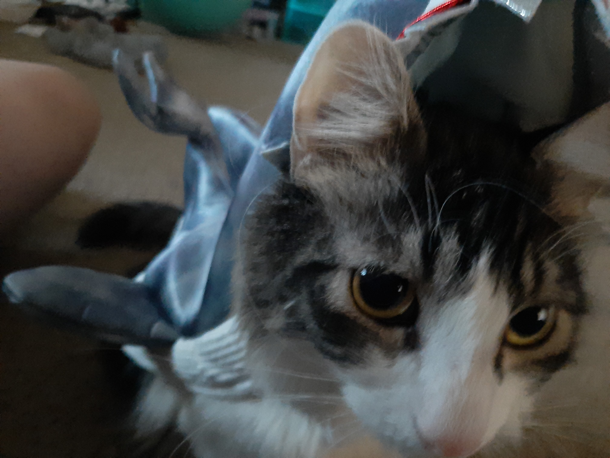
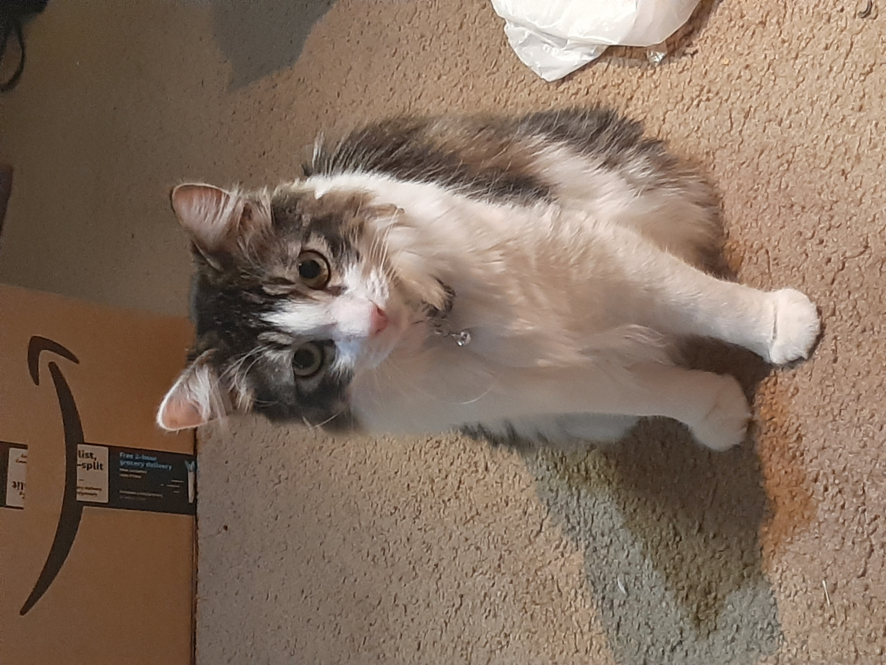
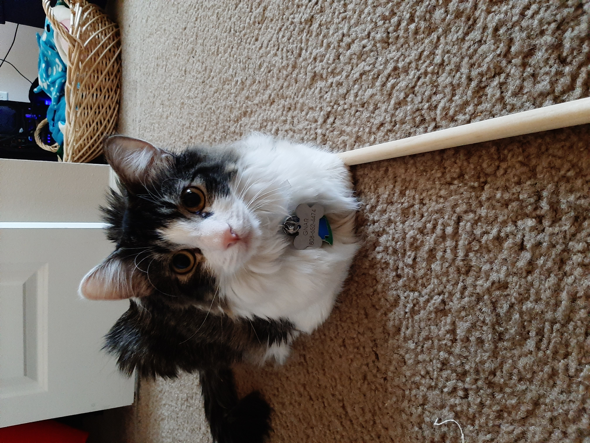
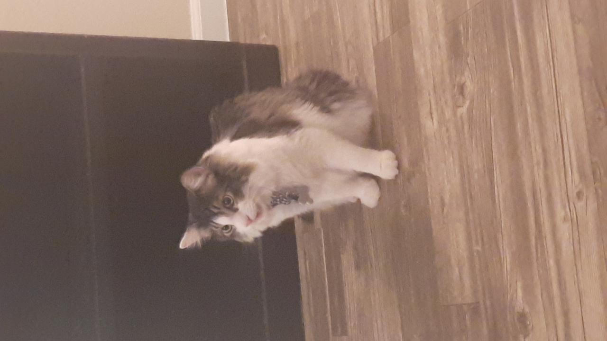

Welcome! You have found one of the hidden pages on my website. This page is all about my precious baby boy Gnar. He is a Domestic Long Hair, who loves to get pets, fetch toy mice, and yell at us any time he wants something. Feel free to scroll through some memories of ours with him. I hope his adorableness brightens your day.
Besides wanting the camera, he also loves taking attention away from anything he deems less important than himself, which is everything.
This was taken during Halloween when we decided to dress him up as the most ferocious thing we could find, a baby shark.
While being photogenic, he occasionally will pose and stay like that since he knows we love him and want to take more pictures of him. This means more love for him.
This image is of the precious boy after catching a toy mouse we have on a string. He decided that once he caught it, it would never escape. Of course it did, but that is a story for another time...

Gnar coming up for love after we put him in his costume.
Something a lot of people don't know is that he's a talker. Whether he's hungry, lonely, bored, or even just wants to hear himself, he will yell the world into silence.